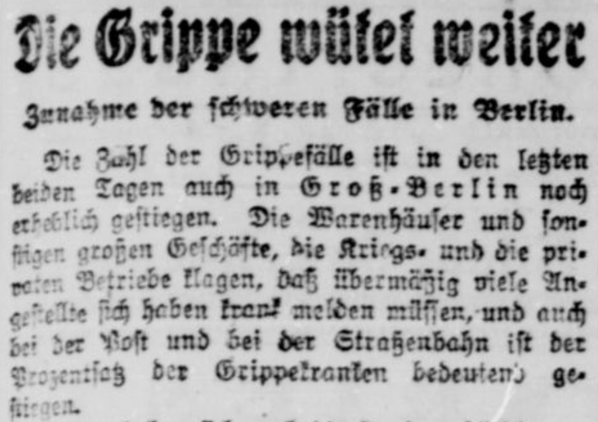

5.2. 🚀 Regelbasierte OCR-Nachbearbeitung#
5.2.1. Hinweise zur Ausführung des Notebooks#
Dieses Notebook kann auf unterschiedlichen Levels erarbeitet werden (siehe Abschnitt “Technische Voraussetzungen”):
Book-Only Mode
Cloud Mode: Dafür auf 🚀 klicken und z.B. in Colab ausführen.
Local Mode: Dafür auf Herunterladen ↓ klicken und “.ipynb” wählen.
5.2.2. Übersicht#
In diesem Notebook wird eine regelbasierte OCR-Nachkorrektur entwickelt und angewendet. Ziel ist es, typische Fehler, die beim OCR-Prozess historischer Texte entstehen, automatisch zu beheben und die Verbesserung messbar zu machen.
Dafür werden folgende Schritte durchgeführt:
Identifikation typischer OCR-Fehler im Korpus (z.B.
<stattch,fiestattsie,ſstatts)Implementierung von Korrekturregeln mit regulären Ausdrücken
Anwendung der Regeln auf ein Beispielbild mittels Tesseract-OCR
Messung der Verbesserung anhand von Precision, Recall und F1-Score im Vergleich mit einem Ground-Truth-Text
(Advanced) Anwendung der Korrekturregeln auf das gesamte Korpus
5.2.3. Typische Fehler#
Im Folgenden listen wir einige typische Fehler in unserem Korpus auf:
“fie” statt “sie” (Bild und Ergebnis später hinzufügen)
“vm”, “vnd” statt “um”, “und”
“<” statt “ch”
Einige Dinge sind keine Fehler, sondern Merkmale der historischen Orthographie, die wir für die weitere Verarbeitung mit modernen NLP-Tools normalisieren möchten:
“ſ” statt “s”
In vielen Fällen können wir dies mit einigen regulären Such- und Ersetzungsmustern beheben (z.B. jedes <, das nicht von Leerzeichen umgeben ist, in ch umwandeln).
Der Standardweg, solche Muster auf einem Computer auszudrücken und zu implementieren, sind reguläre Ausdrücke. Mehr über reguläre Ausdrücke erfahren Sie hier.
5.2.4. Implementierung von Regeln für typische Fehler mit regulären Ausdrücken#
def post_correct_text(ocr_output):
cleaner_output = re.sub(r'(\w)<(\w)', '\\1ch\\2', ocr_output)
cleaner_output = re.sub(r'(\w)5(\w)', '\\1s\\2', cleaner_output)
cleaner_output = re.sub(r'\bv(m|nd)\b', 'u\\1', cleaner_output)
cleaner_output = re.sub(r'\bfie\b', 'sie', cleaner_output)
cleaner_output = cleaner_output.replace('ſ','s')
#cleaner_output = cleaner_output.replace('\n',' ')
return cleaner_output
5.2.5. Anwendung der Regeln auf die OCR-Ergebnisse #
{kind=link}

ocr_output = pytesseract.image_to_string(Image.open('grippe.jpeg'), lang='frk')
---------------------------------------------------------------------------
TesseractError Traceback (most recent call last)
Cell In[4], line 1
----> 1 ocr_output = pytesseract.image_to_string(Image.open('grippe.jpeg'), lang='frk')
File ~\AppData\Local\Programs\Python\Python311\Lib\site-packages\pytesseract\pytesseract.py:486, in image_to_string(image, lang, config, nice, output_type, timeout)
481 """
482 Returns the result of a Tesseract OCR run on the provided image to string
483 """
484 args = [image, 'txt', lang, config, nice, timeout]
--> 486 return {
487 Output.BYTES: lambda: run_and_get_output(*(args + [True])),
488 Output.DICT: lambda: {'text': run_and_get_output(*args)},
489 Output.STRING: lambda: run_and_get_output(*args),
490 }[output_type]()
File ~\AppData\Local\Programs\Python\Python311\Lib\site-packages\pytesseract\pytesseract.py:489, in image_to_string.<locals>.<lambda>()
481 """
482 Returns the result of a Tesseract OCR run on the provided image to string
483 """
484 args = [image, 'txt', lang, config, nice, timeout]
486 return {
487 Output.BYTES: lambda: run_and_get_output(*(args + [True])),
488 Output.DICT: lambda: {'text': run_and_get_output(*args)},
--> 489 Output.STRING: lambda: run_and_get_output(*args),
490 }[output_type]()
File ~\AppData\Local\Programs\Python\Python311\Lib\site-packages\pytesseract\pytesseract.py:352, in run_and_get_output(image, extension, lang, config, nice, timeout, return_bytes)
341 with save(image) as (temp_name, input_filename):
342 kwargs = {
343 'input_filename': input_filename,
344 'output_filename_base': temp_name,
(...) 349 'timeout': timeout,
350 }
--> 352 run_tesseract(**kwargs)
353 return _read_output(
354 f"{kwargs['output_filename_base']}{extsep}{extension}",
355 return_bytes,
356 )
File ~\AppData\Local\Programs\Python\Python311\Lib\site-packages\pytesseract\pytesseract.py:284, in run_tesseract(input_filename, output_filename_base, extension, lang, config, nice, timeout)
282 with timeout_manager(proc, timeout) as error_string:
283 if proc.returncode:
--> 284 raise TesseractError(proc.returncode, get_errors(error_string))
TesseractError: (1, 'Error opening data file C:\\Program Files\\Tesseract-OCR/tessdata/frk.traineddata Please make sure the TESSDATA_PREFIX environment variable is set to your "tessdata" directory. Failed loading language \'frk\' Tesseract couldn\'t load any languages! Could not initialize tesseract.')
print(ocr_output)
ocr_output_corr = post_correct_text(ocr_output)
Lass uns sehen, wie sich das Ganze verändert hat:
print(ocr_output_corr)
5.2.6. Messung der Verbesserung#
Lass uns sehen, wie sich die regelbasierte Nachkorrektur auf die OCR-Qualitätsmetriken ausgewirkt hat
ground_truth = """Die Grippe wütet weiter
Zunahme der schweren Fälle in Berlin.
Die Zahl der Grippefälle ist in den letzten
beiden Tagen auch in Groß-Berlin noch
erheblich gestiegen. Die Warenhäuser und son-
stigen großen Geschäfte, die Kriegs- und die pri-
vaten Betriebe klagen, daß übermäßig viele An-
gestellte sich haben krank melden müssen und auch
bei der Post und bei der Straßenbahn ist der
Prozentsatz der Grippekranken bedeutend ge-
stiegen."""
Originales (unkorrigiertes) OCR-Ergebnis#
precision, recall, f_score = measure_ocr_quality(ocr_output, ground_truth)
print(f'Precision: {round(precision, 4)}\nRecall: {round(recall, 4)}\nF1-score: {round(f_score, 4)}')
Korrigiertes OCR-Ergebnis#
precision, recall, f_score = measure_ocr_quality(ocr_output_corr, ground_truth)
print(f'Precision: {round(precision, 4)}\nRecall: {round(recall, 4)}\nF1-score: {round(f_score, 4)}')
Also, unsere F-Score hat sich etwas verbessert, gut!
5.2.7. (Advanced) Ausführung des regelbasierten OCR-Nachkorrekturverfahrens auf dem gesamten Korpus#
pathtxt = Path('../data/txt')
if not pathtxt.exists():
pathtxt.mkdir(parents=True)
for file in tqdm(pathtxt.iterdir()):
if file.suffix == '.txt':
text = file.read_text()
corrected = post_correct_text(text)
file.write_text(corrected)